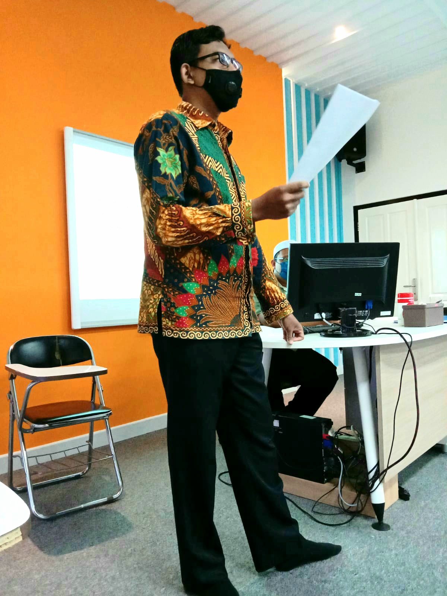

Fery Gunawan Sugiarto
My Resume

Summary
I am Elementary School Educator, 4th Grades Homeroom teacher. Now I am build and want to be a Web Developer and an Ethical Hacker.
Education
- Senior High School Graduate, Science - SMAN 48 Jakarta (Public Senior High School, 2002-2005).
- Doing in Bachelor of Information Systems, Universitas Terbuka at Jakarta.
- Doing in Web Development Skills.
- Doing in Ethical Hacker Skills.
Work Experience
- Mathematics and Science Tutor for Elementary School at LP3i Course Center, Kemayoran Branch, Central Jakarta (2008-2010).
- Local Content (Mulok) Jarimatika and English Conversation Teacher at SDIT Al-Muddatsiriyah Kemayoran in collaboration with LP3i, Kemayoran Branch, Central Jakarta (2009-2011).
- Extracurricular Jarimatika Teacher at SDIT Al-Amanah Sunter in collaboration with LP3i, Kemayoran Branch, Central Jakarta (2009-2012).
- Extracurricular Jarimatika Teacher at SD Islam TUGASKU Pulomas in collaboration with LP3i, Kemayoran Branch, Central Jakarta (2011-2012).
- Assistant Homeroom Teacher, Tahfidz, Arabic Language, and Mathematics for Elementary Level at Jakarta Islamic School (JISc), Kalimalang, East Jakarta (2012).
- Employee Supervisor at MINA Group for Watch Counters at Tamini Mall and Kalibata Mall, East Jakarta (2012-2013).
- Computer and Data Entry Department at PT. Rizka Berkah Guna, a Manpower Placement Service Company (PJTKI), East Jakarta (2014-2016).
- Islamic Studies Educator at SDS Angkasa 10, Halim, Jakarta (2017-2022).
- Homeroom Teacher and Vice Principal at SDS Angkasa 12, Halim, Jakarta (2022-2024).
Skills
- Islamic Studies Educator for Elementary School.
- Homeroom Teacher for Elementary School.
- Basic Mathematics and Science for Elementary School.
- Basic Computer Skills.
- Basic English Skills.
- Basic Management Skills.
Awards and Certifications
Others
{kind=link}